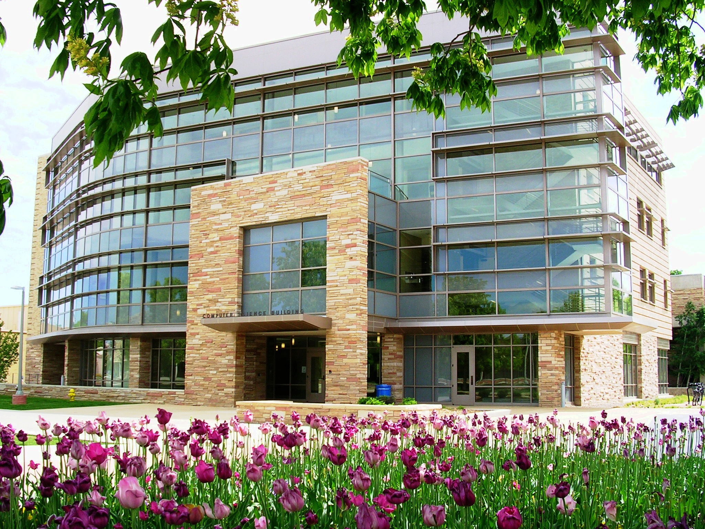

Location
Modularity'15 will be hosted by the Computer Science Department, Colorado State University (CSU), Fort Collins, Colorado, USA.

Computer Science Department, Colorado State University
The Modularity'15 conference and the FOAL and MDS workshops will be located in various rooms in the Lory Student Center in Colorado State University.
The Lory Student Center (LSC) is the venue for the technical sessions, coffee breaks, lunches, and reception will be held. The walk from either hotel to LSC is about 10 minutes.
The Hilton will provide a shuttle for their guests to reach the conference venue and back. Guests will be picked up from the Hilton at 8:00 AM and 8:30 AM on March 16, 17, 18, and 19, as well as at 5:45 PM on March 17 for the reception. Guests will be picked up from the Transit Center at LSC at 5:15 PM on March 16, 17, and 19, as well as 1:45 PM on March 18. The pickup time at the LSC transit center after the reception on Tuesday is 7:30 PM.
If you are driving, park in the Morgan library parking lot, just west of the Morgan library. Here is a link to the parking map. Paid parking is available at spots categorized as “Pay to park”. A limited number of parking permits valid for the entire duration of the conference will be available at the registration table each day. These permits can be used for parking at any of the ‘A’ parking spots in the same parking lot.
The MAX Rapid Transit Service goes north-south along South Mason Street and Mason Trail. The station closest to the Hilton is the one just north of Mason Trail and Prospect Road. The next stop north is the one on Mason and University Avenue, which is close to the Lory Student Center. The MAX service can be used to go further north to the old town area, where you can find a number of restaurants and shops. The last stop for the MAX is a couple of blocks from the CSU Energy Institute, Powerhouse campus.
The banquet will be held offsite at the Sylvan Dale Ranch, 2939 N Co Rd 31D, Loveland, CO 80538. A bus will pick up attendees from the Best Western University Inn and the Hilton, and take them to the ranch. The attendees will be brought back to the same hotels after the banquet.
Useful links:
- Campus Map: Click here.
- Outdoor activities:
- Hiking trails: Click here.
- Rocky Mountain National Park: Click here.
- Estes Park: Click here.
- Denver: Click here.
- Colorado Skiing: Click here.